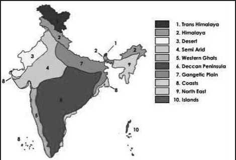
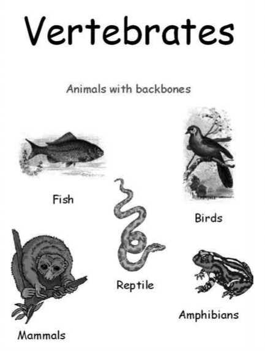

Animal Kingdom

Vertebrates
India is a recognised as one of the mega-diverse countries, rich in biodiversity and associated traditional knowledge. With just 2.4% of the land area, India accounts for nearly 7% of the recorded species even while supporting almost 18% of human population.
In terms of species richness, India ranks seventh in mammals, ninth in birds and fifth in reptiles.
The varied Edaphic, Climatic and Topographic conditions have resulted in a wide range of ecosystems and habitats such as forests, grasslands, wetlands, coastal and marine ecosystems, and deserts in India with greater biodiversity.
Do you know?
The spider’s body has an oil on it to keep the spider free from sticking to it’s own web.
The Indian region is composed of two realms. They are:
1) the Himalayan region represented by Palearctic Realm and
2) the rest of the sub-continent represented by Malayan Realm
a) Two Realms
b) Five Biomes
c) Ten Bio-geographic Zones
d) Twenty five Bio-geographic provinces
Eight terrestrial biogeographic realms are recognized.
1. Nearctic realm
2. Palearctic realm
a) Realms:
Biogeographic realms are large spatial regions within which ecosystems share a broadly similar biota. Realm is a continent or sub continent sized area with unifying features of geography and fauna & flora.
3. Africotropical realm
4. Indo-Malayan realm
5. Ocenaia realm
6. Australian realm
7. Antarctic realm
8. Neotropical realm
Realm
The term biome means the main groups of plants and animals living in areas of certain climate patterns. It includes the way in which animals, vegetation and soil interact together. The plants and animals living in the area are adapted to that environment. The five biomes of India are:
1) Tropical Humid Forests
2) Tropical Dry or Deciduous Forests (including Monsoon Forests)
3) Warm deserts and semi-deserts
4) Coniferous forests and
5) Alpine meadows.
c) Bio-geographic Zones:
Bio-geographic Zones India
Biogeography deals with the geographical distribution of plants and animals. There are 10 biogeographic zones which are distinguished clearly in India. They are as follows—
1) Trans-Himalayas. An extension of the Tibetan plateau, harboring high-altitude cold desert in Laddakh (J&K) and Lahaul Spiti (H.P) comprising 5.7 % of the country’s landmass.
2) Himalayas. The entire mountain chain running from north-western to northeastern India, comprising a diverse range of biotic provinces and biomes, 7.2 % of the country’s landmass.
3) Desert. The extremely arid area west of the Aravalli hill range, comprising both the salty desert of Gujarat and the sand desert of Rajasthan. 6.9% of the country’s landmass.
4) Semi-arid. The zone between the desert and the Deccan plateau, including the Aravalli hill range. 15.6 % of the country’s landmass.
5) Western ghats. The hill ranges and plains running along the western coastline, south of the Tapti river, covering an extremely diverse range of biotic provinces and biomes. 5.8% of the country’s landmass.
6) Deccan peninsula. The largest of the zones, covering much of the southern and southcentral plateau with a predominantly deciduous vegetation. 4.3 % of the country’s landmass.
7) Gangetic plain. Defined by the Ganges river system, these plains are relatively homogenous. 11% of the country’s landmass.
8) North-east India. The plains and non-Himalayan hill ranges of northeastern India, with a wide variation of vegetation. 5.2% of the country’s landmass.
9) Islands. The Andaman and Nicobar Islands in the Bay of Bengal, with a highly diverse set of biomes. 0.03% of the country’s landmass.
10) Coasts. A large coastline distributed both to the west and east, with distinct differences between the two; Lakshadeep islands are included in this with the percent area being negligible.
Biogeography is divided into branches:
i. Phyto-geography (plant geography) deals with origin, distribution and environmental interrelationships of plants.
ii. Zoogeography deals with the migration and distribution of animals.
Bio-geographic Province is a ecosystematic or biotic subdivision of realms. India is divided into 25 bio geographic zones.
Biogeographic classification of India was done by Rodgers and Panwar (1988), describing 10 biogeographic zones in India, further divided into 25 biogeographic provinces. The classification was done using various factors such as altitude, moisture, topography, rainfall, etc. Biogeographic zones were used as a basis for planning wildlife protected areas in India.
Do you know?
The National Highways Authority of India (NHAI) has agreed to construct a fourth underpass for animals on national highway 6 (NH-6) between Sakoli and Deori near the Nagzira Tiger Reserve (TR).
10.1.1. Biogeographic zones and Biogeographic Provinces of India
|
S.No. |
Biogeographic Zones (10 nos) |
Biogeographic Provinces (25 nos) |
|
1. |
Trans Himalaya |
1A:Himalaya -Ladakh Mountains 1B: Himalaya -Tibetan Plateau 1C: Trans - Himalaya Sikkim |
|
2. |
The Himalaya |
2A:Himalaya - North West Himalaya 2B: Himalaya - West Himalaya 2C: Himalaya - Central Himalaya 2D:Himalaya - East Himalaya |
|
3. |
The Indian Desert |
3A: Desert - Thar 3B: Desert - Katchchh |
|
4. |
The Semi Arid |
4A: Semi - Arid - Punjab Plains 4B: Semi - Arid - Gujarat Rajputana |
|
5. |
The Western Ghats |
5A:Western Ghats -Malabar Plains 5B:Western Ghats -Western Ghats Mountains |
|
6. |
The Deccan Peninsula |
6A: Deccan Peninsular -Central Highlands 6B: Deccan Peninsular -Chotta Nagpur 6C: Deccan Peninsular -Eastern Highlands 6D: Deccan Peninsular -Central Plateau 6E: Deccan Peninsular -Deccan South |
|
7. |
The Gangetic Plains |
7A:Gangetic Plain - Upper Gangetic Plains 7B:Gangetic Plain - Lower Gangetic Plains |
|
8. |
The Coasts |
8A: Coasts - West Coast 8B: Coasts - East Coast 8C: Coasts - Lakshdweep |
|
9. |
Northeast India |
9A:North - East - Braham-putra Valley 9B: North - East - North East Hills |
|
10. |
Islands |
10A: Islands - Andamans 10B: Islands - Nicobars |
Do you know?
Wrinkles help elephants keep their body temperature down. Wrinkles increase the surface area, so that more skin becomes wet when the animal bathes. All the cracks and crevices trap moisture, which then takes much longer to evaporate. A wrinkly elephant keeps cooler for longer than it would with smooth skin.
Animal Kingdom
Vertebrates
In-Vertebrates
|
---- Fish |
Annelids ---- |
|
---• Amphibians |
Mollusks *— |
|
---- Reptiles |
Arthropods ---- |
|
—— Birds |
Arachnids ---- |
|
— Mamais |
Echinoderms ---- |
|
Protoza •— |
Do you know?

Eels are sometimes mistaken for Sea Snakes. Eels are
part of the fish family and have gills for breathing. Sea snakes do not have gills but lungs instead and need to go to the surface for air.)
Reptiles
Vertebrates are animals with backbones and spinal columns. Vertebrates are the most advanced organisms on Earth. Although vertebrates represent only a very small percentage of all animals, their size and mobility often allow them to dominate their environment.
Vertebrates
Fi sh
Birds
Reptile
Amphibians
Mammals
Animals with backbones
• Cold blooded
• Have scales
• Have dry skin
• Usually lay eggs
• Ear holes instead of ears
• 4 legs or no legs
• Warm blooded
• Have feathers and wings
• Lay eggs
• Have 2 legs
• Ear holes instead of ears
• Warm blooded
• Have hair or fur
• Give birth to live young ones
• Mammal mother nurse their young one with milk
• Breathe with lungs
• Mammals live on land have 4 legs (or 2 legs & 2 arms), and ears that stick out.
Fishes
• Cold blooded
• Live in water
• Breathe under water using gills , not lungs
• Have scales and fins
• Lay eggs
Amphibians
• Cold blooded
• Live on land & water
• Webbed feet
• Breathe with lungs and gills
• Moist smooth skin
• Four legs (sometimes none)
• Lay eggs
Do you know?
Elephants’ ears act as cooling devices. They can measure up to 2 square metres and they are equipped with an intricate web of blood vessels. When the animal flaps its ears, the blood temperature lowers by as much as 5°C.
Invertebrates do not have backbones. More than 98% animal species in the world are invertebrates. Invertebrates don’t have an internal skeleton made of bone. Many invertebrates have a fluid-filled, hydrostatic skeleton, like the jelly fish or worm. Others have a hard outer shell, like insects and crustaceans.
• Annelids have bodies that are divided into segments.
• They have very well-developed internal organs.
• Found almost anywhere in the world.
• They don’t have any limbs.
• E.g: earthworms, leeches, roundworms, etc.
• Most mollusks have a soft, skin-like organ covered with a hard outside shell.
• Some mollusks live on land, such as the snail and slug.
• Other mollusks live in water, such as the oyster, mussel, clam, squid and octopus.
• Echinoderms are marine animals that live in the ocean.
• Most echinoderms have arms or spines that radiate from the center of their body.
• Common echinoderms include the sea star, sea urchin, sand dollar and sea cucumber.
• Protozoa are simple, single-celled animals.
• They are the smallest of all animals.
• Most protozoa are microscopic.
• They do breathe, move and reproduce like multicelled animals.
• E.g: amoebas, Flagellates,etc.
Arthropods
• Arthropods have limbs with joints that allow them to move.
• They also have an exoskeleton, which is a hard, external skeleton.
• Arthropods include the crustaceans and insects, arachnids.
• live mostly in the ocean or other waters.
• Crustaceans have a hard, external shell which protects their body
• Most commonly known crustaceans are the crab, lobster and barnacle.
• Insects have an exoskeleton that covers their entire body.
• An insect’s consists of 3 body parts and 6 legs and a antennae
• E.g: beetle, butterfly, moth, dragonfly, bee, wasp and praying mantis.
• Common arachnids are spiders, scorpions, ticks and mites.
• Arachnids do not have antennae.
• Arachnids have 2 body parts and 4 pairs of legs.
In terms of plant diversity, India ranks tenth in the world and fourth in Asia. India represents nearly 11% of the world’s known floral diversity.
Polar bears are marvellously adapted to their Arctic surroundings. Their glossy ‘guard’ hairs and dense underfur, the thick layer of fat beneath their skin, and their size protect them against the cold. The guard hairs shed water easily, so that after a swim the polar bear can shake itself like a dog to dry and warm itself quickly.
10.3.1. Important floral groups found in India are described below:
The green non differentiated plants (non - differentiated into organs like root, stem and leaf.) possessing chlorophyll are known as Algae. They usually grow in water or in moist situations.
The fresh-water algae are generally green or blue-green in colour, whereas the marine ones are red or brown. These are autotrophic plants, as they can manufacture their own food.
Non-green non differentiated plants characterised by total absence of chlorophyll are called Fungi.
They grow either on dead, rotten organic matters as saprophytes or live as parasites on other living bodies, which are referred to as hosts.
Moulds and mushrooms are the familiar examples of saprophytic fungi. The maximum diversity of fungi is in the Western Ghats followed by the eastern Himalaya and the western Himalaya.
Non-chlorophyllous micro-organisms which lead saprophytic or parasitic existence. Many of them are pathogenic; Saprophytic bacteria are rather beneficial. They are soil borne and many of them are used in industries.
A lichen is a peculiar combination of an alga and a fungus-the two live deriving mutual benefit.
They are group of greyish green plants which grow on rocks, tree-trunks, dead wood, etc.
The algae manufactures food which becomes available to the fungus, and the absorbs and retains water and thus keeps the algal cells moist. A example of symbiosis.
They are most common in wetlands, rare in rivers and streams and are not found in ground water.
The plant body is differentiated into a small stem and simple leaves, but true roots are absent.
They usually grow in moist places. E.g. Liverworts, mosses They are the second largest group of green plants in India distributed largely in Eastern Himalaya, North-eastern India, Western Himalaya and the Western Ghats.
Mosses constitute the major component of Indian bryoflora followed by liverworts and hornworts.
The pteridophytes have well-differentiated plant bodies, consisting of roots, stems and leaves. Moreover, they possess vascular bundles.
Most of them are terrestrial plants flourishing well in moist and shady places, and some of them are aquatic.
This group includes the vascular cryptogams like clubmosses, horse-tails and ferns which are universally distributed all over the world.
The north-eastern region (including Eastern Himalaya) is rich in pteridophytic diversity, followed by south India (including Eastern and Western Ghats) and north India (including Western Himalaya).
Gymnosperms (gymnos=naked, sperma=seed) are the naked-seeded plants.
They have very simple flowers without accessory whorls and stamens and carpels remain aggregated in cones.
Ovules are present on the surface of the carpels and are directly pollinated by the pollen grains.
There is nothing like ovary, style and stigma, and naturally there is no fruit.
e.g. Cycas, Pinus, Gnetum.
Pine is the largest family. Gnetum and Cycas are mostly confined to North Eastern region, Eastern and Western Ghats, and Andaman & Nicobar Islands.
Do you know?
Polar bears evolved relatively recently (about 200,000 years to possibly as long as 500,000 years ago) from grizzly bears somewhere off eastern Russia or the Alaskan Panhandle. They depend on sea ice for their primary habitat for their food (mainly ringed seals and bearded seals). As the world’s oceans have never been frozen from the north to the south, polar bears simply didn’t have the possibility to reach the Antarctic, although it would have been a perfect home for them.
India has more than 7% of the world’s known flowering plants.
1) peninsular India including western and Eastern Ghats (about 2,600 species),
2) Eastern Himalaya and north-eastern region (about 2,500 species),
3) north-western Himalaya (about 800 species) and
4) Andaman & Nicobar Islands (about 250 species).
Agriculture remains one of the dominant drivers and mainstay of economic growth in India. The large mosaic of distinct agro-ecosystems, characterized by variations in edaphic, climatic and geographic features, has contributed to diverse cropping patterns and systems across the country.
India stands seventh in the world in terms of contribution of species to agriculture and animal husbandry.
The national gene bank at National Bureau Of Plant Genetic Resources (NBPGR), Delhi is primarily responsible for conservation of unique accessions on long-term basis, as base collections for posterity, predominantly in the form of seeds.
India has vast resources of livestock and poultry, which play a vital role in rural livelihood security. In terms of population, India ranks first in buffaloes, second in cattle and goats, third in sheep, fourth in ducks, fifth in chicken and sixth in camels in the world.
Angiosperms (angeion=a case) are the closed-seeded plants.
These are the most highly developed plants which bear flowers having conspicuous accessory and essential whorls. Carpels have the ovary, style and stigma.
With the stimulus of fertilization the ovary usually develops into the fruit and the ovules into seeds. Thus the seeds remain within the fruits.
Do you know?
The name ‘white rhinoceros’ is taken from the Afrikaans word describing its mouth: “weit”, meaning “wide”. Early English settlers in South Africa misinterpreted the “weit” for “white”.
White rhinos are also sometimes called ‘the squarelipped rhinoceros’. Their upper lip lacks the prehensile ‘hook’ of some of the other rhino species. The white rhino is the largest species of land mammal after the elephant.
The genetic resources of farm animals in India are represented by a broad spectrum of native breeds of cattle, buffaloes, goats, sheep, swine, equines, camel and poultry.
Over the years, animal husbandry has intensified in India with widespread introduction of exotic breeds. This has led to the reduction in total genetic variability and population size of many local breeds. The majority (85%) of the domestic livestock in India is reared under low input production systems.
The west Himalayas have low rainfall, heavy snowfall (temperate conditions), whereas in east Himalayas, there is heavy rainfall, snowfall only at very high altitudes, where as at lower altitudes conditions are similar to the tropical rain forests. Flora and fauna of both Himalayas differ.
Flora: Natural monsoon evergreen and semi-evergreen forests; dominant species are sal, silk-cotton trees, giant bamboos; tall grassy meadow with savannahs in tarai.
Flora: Natural monsoon evergreen and semi-evergreen forests; rhododendrons; dwarf hill bamboo and birch forests mixed with alpine pastures.
Flora. Oaks, magnolias, laurels and birches covered with moss and ferns; coniferous forests of pine, fir, yew and junipers with undergrowth of scrubby rhododendrons and dwarf bamboos; lichens, moses, orchids, and other epiphytes dominant (due to high humidity and high rainfall).
It has two zones.
(i) peninsular India and its extension into the drainage basin of the Ganges river system, and
(ii) desert region of Rajasthan-the Thar of Indian desert region.
It is home to tropical moist deciduous to tropical dry deciduous and scrub vegetation depending upon the variation in rainfall and humidity.
Flora: Sal in north and east extensions (higher rainfall) and teak in southern plateau are dominant trees. West Ghats have evergreen vegetation (flora and fauna similar to evergreen rainforests of north eastern of India. In dry areas of Rajasthan and Aravalli hills, trees are scattered and thorny scrub species predominate. The forests give way to more open savannah habit.
polar bears have the ability to slow down their metabolism, after 7-10 days of not being able to feed, for whatever reason and at any time of year, until food becomes available again. This helps them adapt to the uncertainties of food availability in the Arctic. In comparison, black or brown bears can slow down their metabolism only in response to not feeding in the late autumn, just before they enter their dens for the winter. If food is not available in spring or summer, they will simply starve to death.
Thar desert of Rajasthan has unique flora and fauna.
Flora: Throny trees with reduced leaves; cacti, other succulents are the main plants.
Distributed in areas of western ghats and north east India. Flora: Extensive grass lands interspersed with densely forested gorges of evergreen vegetation known as sholas occur in the Nilgiris (an offshoot of Western ghats). Sholas also occur in Aanaimalai and Palani hills. The rain forests of the Western ghats have dense and lofty trees with much species diversity. Mosses, ferns, epiphytes, orchids, lianas and vines, herbs, shrubs make diverse habitat. Ebony trees predominate in these forests. A variety of tropical orchids are found. Stratification in rain forests is very distinct-three horizontal layers are distinguished.
Flora. These are home for tropical rain forests. Giant Dip-terocarpus, Terminalia and Lagerstroemia are dominant. Mangroves are also distributed in the coastal areas.
Do you know?
Penguins are warm blooded, Just like whales, penguins have a layer of fat under their skin called “blubber”. Overtop of this they are covered with fluffy “down” feathers and overtop of those they have their outer feathers which overlap to seal in warmth. Penguins rub oil from a gland onto their feathers to help make them waterproof and windproof.
Sunderbans are delta of the Ganges where both the Brahmaputra and Ganges join and drain into the Bay of Bengal. Flora. The lower tidal zones are pioneer trees like Son-neratia and avicennia. Above this zone there are rhiz-ophora, bruguiria and excaecaria-cereops forest (covering nearly 70% of mangrove forest). Above this level there are supporting forest of phoneix in association with excaecaria. There are heriteria forest in the highest portion with thick undergrowth of phoneix and neepa plams.